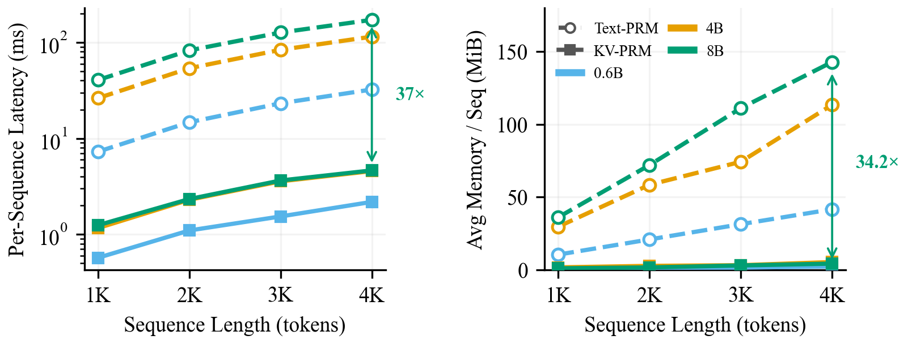

KV-PRM: Efficient Process Reward Modeling via KV-Cache Transfer for Multi-Agent Test-Time Scaling
NeurIPS 2026
Abstract
Process Reward Models (PRMs) have been proven to be highly effective in guiding test-time scaling (TTS) methods, which significantly boost the capabilities of LLM-based multi-agent systems. However, existing PRMs are text-based: they re-encode the entire trajectory text from scratch. In long multi-agent rollouts, the scoring cost, growing quadratically with respect to sequence length L, creates a severe computational bottleneck, severely limiting PRMs’ application in long-context scenarios.
To resolve this, we introduce KV-PRM, a highly efficient process reward model that eliminates the heavy text re-encoding by directly reading the KV cache produced naturally during the LLM’s generation phase. By processing a single “verify token” against the pre-existing KV cache, KV-PRM reduces the scoring cost from O(L²) to O(L). We formally prove that the KV cache contains strictly greater information capacity than text, and is more efficient for downstream reward modeling.
Empirically, across the MATH, GSM8K, and AIME benchmarks, KV-PRM matches or strictly outperforms text-PRMs under various TTS methods such as Beam Search, MCTS, and Weighted Voting, with up to a 5,000× reduction in scoring FLOPs, a 37× reduction in latency, and a 34× reduction in per-sequence memory footprint compared to text-based PRMs.
Method
KV-PRM reuses the representations already computed during autoregressive generation. At each agent handoff, a lightweight LoRA reward adapter reads the generator’s KV cache through a single verify token and produces a reward for the trajectory.
Unlike a text-based PRM, which runs a second forward pass over all trajectory tokens, KV-PRM only computes the verify-token readout. This reduces scoring complexity from O(dL²) to O(dL), where L is the trajectory length and d is the hidden dimension. The reward can guide beam search, Monte Carlo tree search, or weighted voting.
Experimental Results
KV-PRM achieves comparable accuracy to text-based PRMs across MATH, GSM8K, and AIME, with substantially lower scoring compute, latency, and memory overhead. This accuracy–efficiency trade-off holds across beam search, Monte Carlo tree search, and weighted voting.

Latency and memory measurements from Figure 3 of the paper. Efficiency gains vary by model, sequence length, and search configuration.
BibTeX
@misc{kuang2026kvprmefficientprocessreward,
title={KV-PRM: Efficient Process Reward Modeling via KV-Cache Transfer for Multi-Agent Test-Time Scaling},
author={Peng Kuang and Haibo Jin and Xiaoyu Han and Yanli Wang and Xiaopeng Yuan and Ye Yu and Kaidi Xu and Haohan Wang},
year={2026},
eprint={2607.09153},
archivePrefix={arXiv},
primaryClass={cs.AI},
url={https://arxiv.org/abs/2607.09153},
}Citation exported from arXiv. Provenance. The arXiv citation will be replaced when an official NeurIPS proceedings export is available.